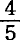
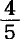
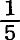
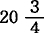
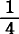
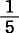

第二十二章剩余价值转化为资本
1.规模扩大的资本主义生产过程。商品生产所有权规律转变为资本主义占有规律
我们以前考察了剩余价值怎样从资本产生(1)，现在我们考察资本怎样从剩余价值产生。把剩余价值当作资本使用，或者说，把剩余价值再转化为资本，叫作资本积累。(2)
首先，我们从单个资本家的角度来考察这个过程。例如，一个纱厂主预付了10000镑的资本，其中用于棉花、机器等等，其余用于工资。假定他每年生产棉纱240000磅，价值为12000镑。如果剩余价值率为100%，剩余价值就包含在40000磅棉纱的剩余产品或纯产品中，它占总产品的，价值2000镑。这2000镑价值将由出售而实现。2000镑的价值额就是2000镑的价值额。从这笔货币上既嗅不出也看不出它是剩余价值。一个价值是剩余价值这一点，表明这一价值怎样来到它的所有者手里，但是丝毫也不能改变价值或货币的本性。
因此，纱厂主要把他新增加的2000镑货币转化为资本，在其他条件不变的情况下，就得预付其中的去购买棉花等物，去购买新的纺纱工人，这些纺纱工人会在市场上找到生活资料，而生活资料的价值已由纱厂主预付给他们了。于是，这2000镑新资本就在纺纱厂中执行职能，并又带来400镑的剩余价值。
资本价值最初是以货币形式预付的；相反，剩余价值一开始就作为总产品的一定部分的价值而存在。如果总产品卖出去，转化为货币，那么资本价值就又取得了自己最初的形式，而剩余价值则改变了自己最初的存在方式。但是从这时候起，资本价值和剩余价值二者都成了货币额，并且以完全相同的方式重新转化为资本。资本家把这二者都用来购买商品，以便能够重新开始制造自己的产品，而这次是在扩大规模上进行的。但是，他要买到这些商品，就必须在市场上找到这些商品。
他自己的棉纱所以能流通，只是因为他把自己的年产品投入市场，正像其他所有的资本家也把自己的商品投入市场一样。但这些商品在进入市场以前，就已经存在于年生产基金中了，也就是说，已经存在于由各个单个资本的总额或社会总资本在一年中转化成的各种物品的总额中了，而每个资本家只占有其中的一个相应部分。市场上的过程只是实现年生产的各个组成部分的交换，使它们从一个人的手里转到另一人的手里，但它既不能增大年生产的总额，也不能改变所生产的物品的本性。可见，全部年产品能有什么用途，取决于它本身的构成，而决不取决于流通。
首先，年生产必须提供用来补偿一年中所消费的资本的物质组成部分的一切物品（使用价值）。扣除这一部分以后，剩下的就是包含剩余价值的纯产品或剩余产品。但这种剩余产品究竟是由什么构成的呢？也许是那些供资本家阶级满足需要和欲望的物品，即加入他们的消费基金的物品吧？如果真是这样，剩余价值就会被挥霍尽，这样就只能进行简单再生产了。
要积累，就必须把一部分剩余产品转化为资本。但是，如果不是出现了奇迹，能够转化为资本的，只是在劳动过程中可使用的物品，即生产资料，以及工人用以维持自身的物品，即生活资料。所以，一部分年剩余劳动必须用来制造追加的生产资料和生活资料，它们要超过补偿预付资本所需的数量。总之，剩余价值所以能转化为资本，只是因为剩余产品（它的价值就是剩余价值）已经包含了新资本的物质组成部分。(3)
但要使这些组成部分真正执行资本的职能，资本家阶级还需要追加劳动。如果从外延方面或内涵方面都不能增加对已经就业的工人的剥削，那就必须雇用追加的劳动力。而资本主义生产的机制也已经考虑到了这一点，因为它把工人阶级当作靠工资过活的阶级再生产出来，让他们的通常的工资不仅够用来维持自己，而且还够用来进行繁殖。资本只要把工人阶级每年向它提供的各种年龄的追加劳动力同已经包含在年产品中的追加生产资料合并起来，剩余价值向资本的转化就完成了。具体说来，积累就是资本以不断扩大的规模进行的再生产。简单再生产的循环改变了，按照西斯蒙第的说法[407]，变成螺旋形了。(4)
现在我们再回过头来谈我们所举的例子。这是亚伯拉罕生以撒，以撒生雅各[408]等等的老故事。10000镑原有资本带来2000镑剩余价值，这些剩余价值资本化了；新的2000镑资本又带来400镑剩余价值；这个剩余价值又资本化了，于是转化为第二个追加资本，又带来80镑新的剩余价值，依此类推。
我们在这里撇开资本家自己所消费的那部分剩余价值不说。追加资本是同原有资本合并，还是同它分开而独立增殖；是由积累它的同一资本家使用，还是转入别的资本家手中，这些我们暂时也不必过问。只是我们不应当忘记，在新形成的资本旁边，原有资本仍在继续再生产自己，并生产剩余价值，而且每一个积累的资本就它同自己所创造的追加资本的关系来说，也是这样。
原有资本是由预付10000镑而形成的。它的占有者是从哪里得到它的呢？是通过他本人的劳动和他的祖先的劳动得到的！——政治经济学的代表人物一致这样回答我们 (5) ，而他们的这种假定好像真的是惟一符合商品生产的规律的。
2000镑追加资本的情况就完全不同了。它的产生过程我们是一清二楚的。这是资本化了的剩余价值。它一开始就没有一个价值原子不是由无酬的他人劳动产生的。合并追加劳动力的生产资料，以及维持这种劳动力的生活资料，都不外是剩余产品的不可缺少的组成部分，即资本家阶级每年从工人阶级那里夺取的贡品的不可缺少的组成部分。如果资本家阶级用贡品的一部分从工人阶级那里购买追加劳动力，甚至以十足的价格来购买，就是说，用等价物交换等价物，那还是征服者的老把戏，用从被征服者那里掠夺来的货币去购买被征服者的商品。
如果追加资本所雇用的就是把它生产出来的人，那么他们首先必须继续使原有资本增殖，其次要对自己过去劳动的产品用比它所费劳动更多的劳动买回来。如果我们把这看作资本家阶级和工人阶级之间的交易，那么，即使用从前雇用的工人的无酬劳动来雇用追加的工人，问题的实质也不会有丝毫改变。资本家也许还把追加资本转化为机器，而机器又把这种追加资本的生产者抛向街头，用几个儿童来代替他们。不管怎样，工人阶级总是用他们这一年的剩余劳动创造了下一年雇用追加劳动的资本。(6)这就是所谓“资本生资本”(7)。
第一个追加资本2000镑的积累的前提，是资本家所预付的、由于他的“最初劳动”而属于他的10000镑价值额。而第二个追加资本400镑的前提，只能是第一个追加资本2000镑的先行积累，400镑就是这2000镑的资本化的剩余价值。现在，对过去无酬劳动的所有权，成为现今以日益扩大的规模占有活的无酬劳动的惟一条件。资本家积累的越多，他就越能更多地积累。
既然构成第一个追加资本的剩余价值，是用一部分原资本购买劳动力的结果，而这种购买符合商品交换的规律，从法律上看来，这种购买的前提不外是工人自由地支配自己的能力，而货币或商品的占有者自由地支配属于他的价值；既然第二个追加资本等等不过是第一个追加资本的结果，因而是前一种关系的结果；既然每一次交易始终符合商品交换的规律，资本家总是购买劳动力，工人总是出卖劳动力，甚至可以假定这种交易是按劳动力的实际价值进行的；那么很明显，以商品生产和商品流通为基础的占有规律或私有权规律，通过它本身的、内在的、不可避免的辩证法转变为自己的直接对立物。表现为最初活动的等价物交换，已经变得仅仅在表面上是交换，因为，第一，用来交换劳动力的那部分资本本身只是不付等价物而占有的他人的劳动产品的一部分；第二，这部分资本不仅必须由它的生产者即工人来补偿，而且在补偿时还要加上新的剩余额。这样一来，资本家和工人之间的交换关系，仅仅成为属于流通过程的一种表面现象，成为一种与内容本身无关的并只是使它神秘化的形式。劳动力的不断买卖是形式。其内容则是，资本家用他总是不付等价物而占有的他人的已经对象化的劳动的一部分，来不断再换取更大量的他人的活劳动。最初，在我们看来，所有权似乎是以自己的劳动为基础的。至少我们应当承认这样的假定，因为互相对立的仅仅是权利平等的商品占有者，占有他人商品的手段只能是让渡自己的商品，而自己的商品又只能是由劳动创造的。现在，所有权对于资本家来说，表现为占有他人无酬劳动或它的产品的权利，而对于工人来说，则表现为不能占有自己的产品。所有权和劳动的分离，成了似乎是一个以它们的同一性为出发点的规律的必然结果。(8)
因此，不论资本主义占有方式好像同最初的商品生产规律如何矛盾，但这种占有方式的产生决不是由于这些规律遭到违反，相反地，是由于这些规律得到应用。只要略微回顾一下以资本主义积累为终点的各个依次发生的运动阶段，就可以再次弄清楚这一点。
首先我们看到，一个价值额最初转化为资本是完全按照交换规律进行的。契约的一方出卖自己的劳动力，他方购买劳动力。前者取得自己商品的价值，从而把这种商品的使用价值即劳动让渡给后者。后者就借助于现在也归他所有的劳动，把已经归他所有的生产资料转化为一种新产品，这个产品在法律上也归他所有。
这个产品的价值首先包含了已被消费掉的生产资料的价值。有用劳动不把生产资料的价值转移到新产品上去，就不能消费这些生产资料；但劳动力要卖得出去，必须能够向使用它的工业部门提供有用劳动。
其次，新产品的价值包含了劳动力价值的等价物和一个剩余价值。这是由于按一定时期（一日，一周等等）出卖的劳动力的价值，低于它在这期间被使用后所创造的价值。但是，工人得到了付给他的劳动力的交换价值，让渡了他的劳动力的使用价值，这同任何买卖都一样。
劳动力这种特殊商品具有独特的使用价值，它能提供劳动，从而能创造价值，但这并不触犯商品生产的一般规律。所以，如果说预付在工资上的价值额不仅在产品中简单地再现出来，而且还增加了一个剩余价值，那么，这也并不是由于卖者被欺诈，——他已获得了自己商品的价值，——而只是由于买者消费了这种商品。
交换规律只要求彼此出让的商品的交换价值相等。这一规律甚至从来就要求商品的使用价值各不相同，并且同它们的消费毫无关系，因为消费只是在买卖结束和完成以后才开始的。
可见，货币最初转化为资本，是完完全全符合商品生产的经济规律以及由此产生的所有权的。尽管这样，这种转化仍然有以下的结果：
1.产品属于资本家，而不属于工人；
2.这一产品的价值除包含预付资本的价值外，还包含剩余价值，后者要工人耗费劳动，而不要资本家耗费任何东西，但它却成为资本家的合法财产；
3.工人保持了自己的劳动力，只要找到买者就可以重新出卖。
简单再生产仅仅是这种最初的活动的周期反复。货币总是一次又一次地重新转化为资本。因此，规律并没有遭到违反，相反地，只是得到不断发生作用的机会。
“好多次连续发生的交换行为，不过使最后一次成为最初一次的代表。”（西斯蒙第《政治经济学新原理》第1卷第70页）
然而，我们已经知道，简单再生产足以使这种最初的活动具有一种同把它当作孤立过程来考察时完全不同的性质。
“在参加国民收入分配的人中间，一部分人〈工人〉每年通过新的劳动获得新的分配权；另一部分人〈资本家〉则通过最初劳动已经预先取得了永久的分配权。”（同上，第110、111页）
大家知道，劳动领域并不是长子继承权创造奇迹的惟一领域。
如果简单再生产为规模扩大的再生产，为积累所代替，事情也还是一样。在前一种情况下，资本家花费了全部剩余价值，在后一种情况下，他只消费了剩余价值的一部分，而把其余部分转化为货币，以此表现了自己的公民美德。
剩余价值是资本家的财产，它从来不属于别人。资本家把剩余价值预付在生产上，完全像他最初进入市场的那一天一样，是从他自己的基金中预付的。至于这一次他的基金是由他的工人的无酬劳动产生的这一事实，和问题绝对无关。如果工人B是用工人A所生产的剩余价值来雇用的，那么，第一，A提供这种剩余价值时，资本家对他的商品支付了全部合理价格，分文也没有少给；第二，这一交易同工人B毫无关系。B所要求的而且有权要求的，是资本家把他的劳动力的价值付给他。
“双方都有利，因为对工人来说，他在劳动前〈应当说：在他自己的劳动带来成果前〉就预先得到他的劳动〈应当说：别的工人的无酬劳动〉的果实；对雇主来说，这个工人的劳动的价值大于他的工资的价值〈应当说：他生产的价值大于他的工资的价值〉。”（西斯蒙第《政治经济学新原理》第1卷第135页）
诚然，如果我们对资本主义生产从它的更新的不间断进行中加以考察，而且我们考察的不是单个资本家和单个工人，而是他们的整体，即资本家阶级和与它对立的工人阶级，那么，情况就会完全不同了。但这样一来，我们就得应用一个与商品生产完全不同的标准。
在商品生产中，互相对立的仅仅是彼此独立的卖者和买者。他们之间的相互关系随着他们所签订的契约期满而告结束。要是交易重复进行，那是由于订了新的契约，它同以前的契约完全无关，在这里同一买者和同一卖者再次碰在一起只是偶然的事情。
因此，如果要把商品生产或属于商品生产的过程按商品生产本身的经济规律来加以判断，我们就必须把每个交换行为就其本身来加以考察，撇开它与以前和以后的交换行为的一切联系。因为买卖只是在个别人之间进行，所以不可能在这里去寻找整个社会阶级之间的关系。
现在执行职能的资本，不管它经过的周期的再生产和先行积累的系列多么长，总是保持着它本来的处女性。尽管每一个单独考察的交换行为仍遵循交换规律，但占有方式却会发生根本的变革，而这丝毫不触犯与商品生产相适应的所有权。这同一所有权，在产品归生产者所有，生产者用等价物交换等价物，只能靠自己劳动致富的初期，是有效的；在社会财富越来越多地成为那些能不断地重新占有别人无酬劳动的人的财产的资本主义时期，也是有效的。
一旦劳动力由工人自己作为商品自由出卖，这种结果就是不可避免的。但只有从这时起，商品生产才普遍化，才成为典型的生产形式；只有从这时起，每一个产品才一开始就是为卖而生产，而生产出来的一切财富都要经过流通。只有当雇佣劳动成为商品生产的基础时，商品生产才强加于整个社会；但也只有这时，它才能发挥自己的全部潜力。说雇佣劳动的介入使商品生产变得不纯，那就等于说，商品生产要保持纯粹性，它就不该发展。商品生产按自己本身内在的规律越是发展成为资本主义生产，商品生产的所有权规律也就越是转变为资本主义的占有规律。(9)
我们已经看到，甚至在简单再生产的情况下，全部预付资本，不管它的来源如何，都转化为积累的资本或资本化的剩余价值(10) 。但在生产的巨流中，全部原预付资本，与直接积累的资本即重新转化为资本（不论它是在积累者手中，还是在他人手中执行职能）的剩余价值或剩余产品比较起来，总是一个近于消失的量（数学意义上的无限小的量）。所以，政治经济学一般都把资本说成是“用来重新生产剩余价值的积累起来的财富”(11)（转化了的剩余价值或收入），或把资本家说成是“剩余产品的占有者”(12)。只不过这同一种看法还有另一种表达方式，即全部现存的资本都是积累起来的或资本化的利息，因为利息不过是剩余价值的一部分。(13)
2.政治经济学关于规模扩大的再生产的错误见解
在进一步探讨积累或剩余价值再转化为资本的某些规定以前，我们必须清除古典经济学提出的一种含糊观点。
资本家为自己消费而用一部分剩余价值购买的商品，对他不起生产资料和价值增殖手段的作用，同样，他为满足自己的自然需要和社会需要而购买的劳动，也不起生产劳动的作用。资本家没有通过购买这种商品和劳动把剩余价值转化为资本，相反地，把它作为收入消费掉或花费掉了。旧贵族的思想，如黑格尔正确地指出的，是主张“消费现存的东西”[409]，特别是讲究个人侍奉的豪华，以示阔绰，与此相反，在资产阶级经济学看来，具有决定性重要意义的是，宣布资本积累是每个公民的首要义务，并谆谆告诫人们，如果把全部收入吃光用尽，而不把其中相当的一部分用来雇用追加的生产工人，让他们带来的东西超过他们耗费的东西，那就不能积累。另一方面，资产阶级经济学又不得不同一般人的偏见作斗争，这种偏见把资本主义生产和货币贮藏混为一谈(14)，以为积累的财富会使财富现有的实物形式免遭破坏，也就是不被消费掉，或者说，使财富避免进入流通。其实，把货币贮藏起来不投入流通，同把货币作为资本而增殖，恰恰是相反的两回事，从货币贮藏的意义上进行商品积累，是十足的愚蠢行为。(15) 大量商品的积累是流通停滞或生产过剩的结果。(16)诚然，在一般人的观念中是把下面这两种现象混在一起了：一方面是富人消费基金中积累的供慢慢消费的财物，另一方面是一切生产方式所共有的储备。后一现象，我们在分析流通过程时还要略微谈到。
因此，古典经济学强调指出，积累过程的特点是，剩余产品由生产工人消费，而不由非生产工人消费，这一点是对的。但它的错误也正是从这里开始。亚·斯密使人们形成一种流行的看法，把积累仅仅看成剩余产品由生产工人消费，或者说，把剩余价值的资本化仅仅看成剩余价值转变为劳动力。例如，我们听听李嘉图的说法：
“必须懂得，一个国家的全部产品都是要消费掉的，但究竟由再生产另一个价值的人消费，还是由不再生产另一个价值的人消费，这中间有难以想象的区别。我们说收入节约下来加入资本，我们的意思是，加入资本的那部分收入，是由生产工人消费的，而不是由非生产工人消费的。如果认为资本可以由于不消费而增加，那就大错特错了。”(17)
李嘉图和一切以后的经济学家追随亚·斯密一再重复地说：“加入资本的那部分收入，是由生产工人消费的”，这就大错特错了。根据这种看法，所有转化为资本的剩余价值都要成为可变资本了。其实，剩余价值和原预付价值一样，分成不变资本和可变资本，分成生产资料和劳动力。劳动力是可变资本在生产过程中的存在形式。在这个过程中，它本身被资本家消费了。它通过自己的职能——劳动——消费生产资料。同时，购买劳动力所付出的货币，转化为不是由“生产劳动”而是由“生产工人”消费的生活资料。亚·斯密根据自己根本错误的分析得出了以下的荒谬结论：虽然每一单个资本分成不变组成部分和可变组成部分，但社会资本只分解为可变资本，或者说，只用来支付工资。例如，一个呢绒厂主把2000镑转化为资本。他把这些货币的一部分用来雇织工，另一部分用来购买毛纱和织毛机等等。而把毛纱和织毛机卖给他的人，又把其中的一部分用来支付劳动，依此类推，直到2000镑完全用于支付工资，或者这2000镑所代表的全部产品都由生产工人消费掉。我们看到，这个论据的全部力量就在于把我们推来推去的“依此类推”这几个字。事实上，亚当·斯密正是在困难开始的地方中止了他的研究。(18)
要是我们只考察年总生产基金，每年的再生产过程是容易理解的。但年生产的各个组成部分都必须投入商品市场，而困难就在这里开始。各个资本的运动和个人收入的运动交错混合在一起，消失在普遍的换位中，即消失在社会财富的流通中，这就迷惑了人们的视线，给我们的研究提出了极其复杂的问题需要解决。在本书第二册第三篇[411]中，我将对实际的联系进行分析。重农学派最大的功劳，就在于他们在自己的《经济表》[412]中，首次试图画出一幅通过流通表现出来的年生产的图画。(19)
不言而喻，政治经济学不会不利用亚·斯密的所谓纯产品中转化为资本的部分完全由工人阶级消费这一论点，来为资本家阶级的利益服务。
3.剩余价值分为资本和收入。节欲论
在前一章里，我们把剩余价值或剩余产品只是看作资本家的个人消费基金(20)，在这一章里，我们到现在为止把它只是看作积累基金。但是，剩余价值不仅仅是前者，也不仅仅是后者，而是二者兼而有之。剩余价值一部分由资本家作为收入(21)消费，另一部分用作资本或积累起来。
在剩余价值量已定时，这两部分中的一部分越大，另一部分就越小。在其他一切条件不变的情况下，这种分割的比例决定着积累量。而谁进行这种分割呢？是剩余价值的所有者资本家。因此，这是他的意志行为。至于他所征收的贡品中由他积累的部分，据说是他节约下来的，因为他没有把它吃光用尽，也就是说，因为他执行了他作为资本家的职能，即执行使自己致富的职能。
资本家只有作为人格化的资本，他才有历史的价值，才有像聪明的利希诺夫斯基所说的“没有任何日期”[413]的历史存在权。也只有这样，他本身的暂时必然性才包含在资本主义生产方式的暂时必然性中。但既然这样，他的动机，也就不是使用价值和享受，而是交换价值和交换价值的增殖了。作为价值增殖的狂热追求者，他肆无忌惮地迫使人类去为生产而生产，从而去发展社会生产力，去创造生产的物质条件；而只有这样的条件，才能为一个更高级的、以每一个个人的全面而自由的发展为基本原则的社会形式建立现实基础。只有作为资本的人格化，资本家才受到尊敬。作为资本的人格化，他同货币贮藏者一样，具有绝对的致富欲。但是，在货币贮藏者那里表现为个人的狂热的事情，在资本家那里却表现为社会机制的作用，而资本家不过是这个社会机制中的一个主动轮罢了。此外，资本主义生产的发展，使投入工业企业的资本有不断增长的必要，而竞争使资本主义生产方式的内在规律作为外在的强制规律支配着每一个资本家。竞争迫使他不断扩大自己的资本来维持自己的资本，而他扩大资本只能靠累进的积累。
所以，就资本家的一切行动只是那个通过他才有了意志和意识的资本的职能而论，他的私人消费，对他来说也就成了对他的资本积累的掠夺，就像在意大利式簿记中资本家的私人开支被记在资本家的借方来同资本相对立一样。积累是对社会财富世界的征服。它在扩大被剥削的人身材料的数量的同时，也扩大了资本家直接和间接的统治。(22)
但是，原罪到处发生作用。随着资本主义生产方式、积累和财富的发展，资本家不再仅仅是资本的化身。他对自己的亚当(23)具有“人的同情感”[414]，而且他所受的教养使他把禁欲主义的热望嘲笑为旧式货币贮藏者的偏见。古典的资本家谴责个人消费是违背他的职能的罪恶，是对积累的“节制”，而现代化的资本家却能把积累看作是对自己的享受冲动的“禁欲”。“啊，他的胸中有两个灵魂，一个要想同另一个分离！”[415]
在资本主义生产方式的历史初期，——而每个资本主义的暴发户都个别地经过这个历史阶段，——致富欲和贪欲作为绝对的欲望占统治地位。但资本主义生产的进步不仅创立了一个享乐世界；随着投机和信用事业的发展，它还开辟了千百个突然致富的源泉。在一定的发展阶段上，已经习以为常的挥霍，作为炫耀富有从而取得信贷的手段，甚至成了“不幸的”资本家营业上的一种必要。奢侈被列入资本的交际费用。此外，资本家财富的增长，不是像货币贮藏者那样同自己的个人劳动和个人消费的节约成比例，而是同他榨取别人的劳动力的程度和强使工人放弃一切生活享受的程度成比例的。因此，虽然资本家的挥霍从来不像放荡的封建主的挥霍那样是直截了当的，相反地，在它的背后总是隐藏着最肮脏的贪欲和最小心的盘算；但是资本家的挥霍仍然和积累一同增加，一方决不会妨害另一方。因此，在资本家个人的崇高的心胸中同时展开了积累欲和享受欲之间的浮士德式的冲突。
艾金医生在1795年发表的一部著作中说：
“曼彻斯特的工业可分为四个时期。在第一个时期，工厂主为了维持生活，不得不辛勤劳动。”
他们发财致富特别是靠盘剥那些把子女送来当学徒的父母，那些父母为此不得不付给他们高额学费，而这些学徒却忍饥挨饿。另一方面，当时平均利润很低，要积累就得大大节俭。他们过着像货币贮藏者一样的生活，甚至连资本的利息也不肯消费。
“在第二个时期，他们开始赚到了少量的财产，但还像过去那样辛勤地劳动”，——因为像一切奴隶监督者都知道的那样，对劳动的直接剥削是要花费劳动的，——“并且过着和过去一样的俭朴生活……在第三个时期，奢侈开始了，各企业通过派骑马的人〈骑马的推销员〉到王国各商业城市去兜揽生意而扩大了经营。在1690年以前，在工业中赚到3000—4000镑资本的人可能为数极少，甚至根本没有。但大约就在这个时候，或者在稍后的时期，工业家已经积累了货币，开始建造石头房子来代替木棚或土房……但在18世纪最初几十年，如果一个曼彻斯特的工厂主以一品脱外国葡萄酒款待自己的客人，那就会遭到所有邻居的议论和非难。”
在机器生产出现以前，工厂主们晚上在酒店聚会时花的费用从来不会超过6便士一杯果汁酒和1便士一包烟叶。直到1758年，才出现了划时代的事情，人们第一次看到“一个实际从事营业的人坐上自己的马车”！“第四个时期”，即18世纪最后30多年，“是穷奢极欲，大肆挥霍的时期，这是靠扩大营业来维持的”(24)。如果善良的艾金医生今天在曼彻斯特复活的话，他又将说些什么呢！
积累啊，积累啊！这就是摩西和先知们！[416]“勤劳提供物资，而节俭把它积累起来”。(25)因此，节俭啊，节俭啊，也就是把剩余价值或剩余产品中尽可能大的部分重新转化为资本！为积累而积累，为生产而生产——古典经济学用这个公式表达了资产阶级时期的历史使命。它从未低估过财富分娩带来的痛苦(26)，而对历史必然性伤心流泪又有什么用处呢？在古典经济学看来，无产者不过是生产剩余价值的机器，而资本家也不过是把这剩余价值转化为追加资本的机器。它非常严肃地对待资本家的历史职能。为了使资本家的内心摆脱享受欲和致富欲之间的不幸的冲突，马尔萨斯在本世纪20年代初期曾维护这样一种分工：让实际从事生产的资本家承担积累的任务，而让另一些参加剩余价值分配的人，如土地贵族、领受国家和教会俸禄的人等等承担挥霍的任务。他说，最重要的就是“把支出欲和积累欲分开”(27)。那些早就变得享乐成性和沉湎于交际的资本家先生们不由得大叫起来。他们的代言人之一，一个李嘉图派叫道：马尔萨斯先生鼓吹高额地租、高额税收等等，难道是为了让非生产消费者来不断地刺激工业家！诚然，口号所标榜的是生产，规模不断扩大的生产，但是，
“这个过程与其说会促进生产，不如说会阻碍生产。而且让一部分人过着游手好闲的生活，只是为了去鞭策另一些人，这也不是十分公正的。尽管从后者的性格来说，如果强迫他们去做，他们是能把事情办好的”(28)。
尽管他认为靠吸掉工业资本家汤里的油水这种办法来刺激工业资本家去积累是不公正的，但是他觉得，“要使工人勤勉地劳动”，必须尽可能地把工人的工资减到最低限度。他从来也不隐瞒生财之道就在于占有无酬劳动。
“工人需求的增加不过是表明他们甘愿拿走自己产品中的一小部分，而把其中大部分留给他们的雇主；要是有人说，消费〈工人的消费〉减少会产生过剩现象〈市场商品充斥，生产过剩〉，那我只能回答说：过剩现象是高额利润的同义语。”(29)
关于从工人那里掠夺来的赃物应该怎样在工业资本家和游手好闲的土地所有者等人之间进行分配才最有利于积累这种学究气的争论，遇到七月革命[418]就平息下去了。此后不久，城市无产阶级在里昂敲响了警钟，而农村无产阶级在英国燃起了熊熊烈火。[419]海峡此岸在传播欧文主义，海峡彼岸在传播圣西门主义和傅立叶主义。庸俗经济学的时钟已经响了。在纳索·威·西尼耳于曼彻斯特发现资本的利润（包括利息）是无酬的“最后第十二个劳动小时”的产物(30)恰恰一年以前，他曾向世界宣布了自己的另一个发现。他庄严地声称：“我用节欲一词来代替被看作生产工具的资本一词。”(31)这真是庸俗经济学的“发现”的不可超越的标本！它用阿谀的词句来替换经济学的范畴。如此而已。西尼耳教训说：“野蛮人造弓就是从事工业，但他没有实行节欲。”这就向我们说明，在早期的社会状态下，劳动资料如何和为何没有资本家的“节欲”也被制造出来了。“社会越进步，就越要求节欲”(32)，也就是越要求那些以占有别人劳动及其产品为业的人实行节欲。从此劳动过程的一切条件就如数转化为资本家的节欲行为了。谷物不只是吃掉，而且还用来播种，这是资本家的节欲！葡萄酒保留一段时间进行发酵，这是资本家的节欲！(33)资本家“把生产工具贷给〈！〉工人”，也就是说，把生产工具同劳动力合并在一起作为资本来增殖，而不把蒸汽机、棉花、铁路、肥料、挽马等等吃光，或者按照庸俗经济学家的幼稚说法，不把“它们的价值”变成奢侈品和其他消费资料挥霍掉，这就是资本家在掠夺自己的欲望。(34)资本家阶级究竟怎样能做到这一点，至今仍然是庸俗经济学严加保守的秘密。够了，世界之所以能生存，无非全靠这个在毗湿奴神前的现代赎罪者资本家的自我修行。不仅是积累，就是单纯的“保存资本也要求不断地努力克服把资本吃光用尽的诱惑”(35)。所以很明显，单是人道就要求把资本家从殉道和诱惑中解救出来，其办法同不久前乔治亚州的奴隶主所采取的一样，后者通过废除奴隶制[422]而摆脱了这样一种左右为难的境地：是把鞭打黑奴所得的全部剩余产品消耗在香槟酒上，还是把其中一部分再转化为更多的黑人和更多的土地。
在极不相同的经济的社会形态中，不仅都有简单再生产，而且都有规模扩大的再生产，虽然程度不同。生产和消费会累进地增加，因此，转化为生产资料的产品也会累进地增加。但是，只要工人的生产资料，从而他的产品和生活资料，还没有以资本形式同他相对立，这个过程就不会表现为资本积累，因而也不会表现为资本家的职能。(36)几年前去世的、继马尔萨斯之后在黑利伯里东印度学院讲授政治经济学的理查·琼斯，曾用两大事实很好地阐明了这一点。因为印度人民大部分是自耕农，所以他们的产品、劳动资料和生活资料从来不具有“从别人的收入中节约下来从而要经过一个预先的积累过程的基金的形式”(37)。另一方面，在旧制度被英国统治破坏最小的省份，非农业工人由豪门直接雇用，一部分剩余农产品以贡品或地租形式流到这些豪门手中。这种剩余产品的一部分在实物形式上为豪门所消费，另一部分由工人替他们转化为奢侈品及其他消费品，而剩下的一部分则形成自己占有劳动工具的工人的工资。在这里，虽然没有那种奇异的圣徒、神色黯然的骑士(38)、“禁欲的”资本家介于其间，生产和规模扩大的再生产也仍在照常进行。
4.几种同剩余价值分为资本和收入的比例无关但决定积累量的情况：劳动力的剥削程度；劳动生产力；所使用的资本和所消费的资本之间差额的扩大；预付资本的量
假设剩余价值分为资本和收入的比例已定，积累的资本量显然取决于剩余价值的绝对量。假定80%资本化，20%被消费掉，那么，积累的资本是2400镑还是1200镑，就要看剩余价值的总额是3000镑还是1500镑。可见，决定剩余价值量的一切情况也影响着积累的量。在这里我们对这些情况再作一次总括的说明，但是只限于它们在积累方面会提供新观点的范围。
我们记得，剩余价值率首先取决于劳动力的剥削程度(39)。政治经济学非常重视剥削程度的这种作用，以致有时把由于提高劳动生产力而造成的积累的加速和由于加强对工人的剥削而造成的积累的加速等同起来。(40)在论述剩余价值的生产的那几篇里，我们总是假定工资至少和劳动力的价值相等。但是，把工资强行压低到这一价值以下，在实际运动中起着极为重要的作用，因此我们不能不对这一点略加考察。在一定限度内，这实际上是把工人的必要消费基金转化为资本的积累基金。
约·斯·穆勒说：
“工资没有生产力；它是一个生产力的价格；工资不会同劳动本身一起参加商品的生产，正如机器的价格也不会同机器本身一起参加商品的生产一样。如果劳动无须购买就能得到，工资就成为多余的了。”(41)
但是，假如工人能靠空气过活，那用任何价格也不能购买他们了。因此，工人不费分文是一个数学意义上的极限：虽然可以逐渐接近，但永远无法达到。资本的经常趋势是使工人降到这种不费分文的地步。我常引用的一个18世纪著作家、《论手工业和商业》的作者(42)声称，英国的重大历史任务是把英国的工资降低到法国和荷兰的水平，他不过是泄露了英国资本灵魂深处的秘密。(43)例如，他天真地说：
“如果我们的穷人〈称呼工人的术语〉想过奢侈的生活……他们的劳动就必然昂贵…… 只要想想我们工场手工业工人消费多得惊人的奢侈品吧，什么白兰地酒、杜松子酒、茶叶、砂糖、外国水果、烈性啤酒、印花亚麻布、鼻烟和香烟等等。”(44)
他还引用了北安普敦郡的一个工厂主的文章，这位工厂主仰天悲鸣：
“劳动在法国要比在英国整整便宜三分之一，因为法国的穷人劳动繁重，但衣食简单，他们的主要食物是面包、水果、青菜、根菜和干鱼；他们很少吃肉，小麦昂贵时，面包也吃得很少”(45)。这篇文章的作者接着说道：“而且他们喝的只是白水或低度酒。因此他们实际上花的钱极少…… 这种状况当然很难达到，但并不是不能达到的，法国和荷兰已经存在这种状况，就令人信服地证明了这一点。”(46)
20年后，一位名列贵族的美国骗子本杰明·汤普森（又称拉姆福德伯爵）遵循着同一博爱主义的路线，使上帝和人都大为满意。他的《论文集》可以说是一本菜谱，其中全是制作各种各样的代用品的方法，用以代替工人日常的昂贵食品。请看这位令人惊异的“哲学家”的一张特别成功的菜单：
“大麦5磅，玉米5磅，青鱼3便士，盐1便士，醋1便士，胡椒和白菜2便士，总计便士，可以做成供64个人喝的汤，如果粮食的价格中常，汤的费用还可以降低到每人合便士。”(47)
随着资本主义生产的发展，商品搀假使汤普森的理想也成为多余的了。(48)
18世纪末和19世纪的最初几十年间，英国的租地农场主和地主把工资强行降低到绝对的最低限度，他们以工资形式付给农业短工的钱比最低限度还要低，而以教区救济金的形式付给不足的部分。下面这个例子可以说明英国的道勃雷们在“合法地”来规定工资率时的丑态：
“1795年，当地主们在规定斯皮纳姆兰地方的工资的时候，他们已用过午餐，但是他们显然认为工人是无须用午餐的……他们决定：当一个8磅11盎司重的面包卖1先令的时候，每人每周的工资应为3先令，在这种面包价格上涨，而没有达到1先令5便士之前，工资可以适当增加。一旦超过了这一价格，工资则应按比例地减少，直到这种面包的价格达到2先令为止，这时每人的食量应比以前减少。”(49)
1814年，有一位大租地农场主，治安法官，济贫院主管，工资调整人阿·贝内特在上院调查委员会上被质问：
“一天劳动的价值和教区给工人的救济金之间是否有某种比例？”他回答说：“有的，每个家庭每周的收入要超过名义工资，补足到每人一加仑面包（8磅11盎司）和每人3便士…… 我们认为一个家庭中每人每周有一加仑面包就足以维持生活了；3便士则用来买衣服；如果教区愿意发给衣服，这3便士就可以不发了。这种办法不仅在威尔特郡西部一带普遍采用，我想全国也在普遍采用。”(50)
当时有一位资产阶级著作家喊道：
“这样，租地农场主们在若干年内就把自己同胞中的这个可敬的阶级贬低了，竟然迫使他们以贫民习艺所作为栖身之所……租地农场主甚至阻碍工人最必要的消费基金的积累，以便增加自己的收入。”(51)
目前，直接掠夺工人必要的消费基金对于剩余价值的形成，从而对于资本的积累基金的形成究竟起怎样的作用，已经由所谓家庭劳动（参看第十三章第八节d(52)）的例子说明了。在本篇中我们还要举出更多的事实。
虽然在一切产业部门里，由劳动资料构成的不变资本部分，必须足够供由设备规模决定的一定数量的工人使用，但是它完全不必总是同所使用的劳动量按同一比例增加。假定某一工厂有100个工人，每人劳动8小时，共800个劳动小时。如果资本家想使这个劳动小时数增加一半，他可以再雇用50个工人，但这样一来，他不仅要在工资上预付新的资本，而且要在劳动资料上预付新的资本。不过他也可以使原有的100个工人不是劳动8小时而是劳动12小时，这样，现有的劳动资料就足够使用了，只是损耗得快一些罢了。可见，由提高劳动力的紧张程度而获得的追加劳动，没有不变资本部分的相应增加，也能够增加剩余产品和剩余价值，即积累的实体。
在采掘工业中，例如在采矿业中，原料不是预付资本的组成部分。这里的劳动对象不是过去劳动的产品，而是由自然无偿赠予的。如金属矿石、矿物、煤炭，石头等等。这里的不变资本几乎完全由劳动资料组成，它们能很容易地容纳增加了的劳动量（如工人日夜换班）。而在其他条件相同的情况下，产品的数量和价值同所使用的劳动成正比地增加。在这里，正像在生产的第一天一样，形成产品的原始要素，从而也就是形成资本物质成分的要素，即人和自然，是携手并进的。由于劳动力具有弹性，即使不预先增加不变资本，积累的领域也能扩大。
在农业中，不预付追加的种子和肥料，就不可能扩大耕地。但是，一旦预付了追加的种子和肥料，那么，即使对土地进行纯粹机械性的耕作，也会对产量的提高发生奇迹般的作用。只要原有数量的工人付出更多的劳动量，不必预付新的劳动资料，也可以提高肥力。这又是人对自然的直接作用，这种作用无需新资本的介入，也会成为扩大积累的直接源泉。
最后，在本来意义的工业中，任何追加的劳动消耗都要求相应地追加原料的消耗，但是不一定要追加劳动资料的消耗。因为采掘工业和农业给加工工业提供了它本身需要的原料和它的劳动资料的原料，所以采掘工业和农业无需追加资本而生产的追加产品，对于加工工业也是有利的。
总的结论是：资本一旦合并了形成财富的两个原始要素——劳动力和土地，它便获得了一种扩张的能力，这种能力使资本能把它的积累的要素扩展到超出似乎是由它本身的大小所确定的范围，即超出由体现资本存在的、已经生产的生产资料的价值和数量所确定的范围。
资本积累的另一个重要的因素是社会劳动生产率的水平。
随着劳动生产力的提高，表现一定价值从而一定量剩余价值的产品量也会提高。在剩余价值率不变甚至下降，但其下降比劳动生产力的提高缓慢的情况下，剩余产品量也会增加。因此，在剩余产品分为收入和追加资本的比例保持不变的情况下，资本家的消费可以增加，而积累基金并不减少。积累基金的相对量甚至可以靠牺牲消费基金而增加，而由于商品变得便宜，资本家享用的消费品仍和过去相等甚至比过去还多。但是我们已经知道，工人之变得便宜，从而剩余价值率的增加，是同劳动生产率的提高携手并进的，即使在实际工资提高的情况下也是如此(53)。实际工资从来不会和劳动生产率按同一比例增加。这样，同一可变资本价值会推动更多的劳动力，从而推动更多的劳动。同一不变资本价值会表现为更多的生产资料，即表现为更多的劳动资料、劳动材料和辅助材料，从而会提供更多的形成产品和价值的要素，或者说，提供更多的吮吸劳动的要素。因此，在追加资本的价值不变甚至降低的情况下，积累仍然可以加快。不仅再生产的规模在物质上扩大了，而且剩余价值的生产也比追加资本的价值增长得更快。
劳动生产力的发展也会对原资本或已经处于生产过程中的资本发生反作用。执行职能的不变资本的一部分是由劳动资料如机器等等构成的，这些劳动资料只有经过一个较长的时期，才会被消费掉，因而被再生产出来或被同一种新的物品所替换。但是，这些劳动资料每年都有一部分死亡，或者说，达到了它的生产职能的终点。因此，每年都有一部分是处在周期的再生产或被同一种新的物品所替换的阶段。如果生产这些劳动资料的部门的劳动生产力发展了，而劳动生产力是随着科学和技术的不断进步而不断发展的，那么旧的机器、工具、器械等等就会被效率更高的、从功效来说更便宜的机器、工具和器械等等所代替。撇开现有的劳动资料在细节上的不断改进不说，旧的资本也会以生产效率更高的形式再生产出来。不变资本的另一部分，即原料和辅助材料在一年当中不断地再生产出来，而其中由农业生产的大多是一年再生产一次。因此，改良方法等等的每次采用，在这里对追加资本和已在执行职能的资本几乎同时发生影响。化学的每一个进步不仅增加有用物质的数量和已知物质的用途，从而随着资本的增长扩大投资领域。同时，它还教人们把生产过程和消费过程中的废料投回到再生产过程的循环中去，从而无需预先支出资本，就能创造新的资本材料。正像只要提高劳动力的紧张程度就能加强对自然财富的利用一样，科学和技术使执行职能的资本具有一种不以它的一定量为转移的扩张能力。同时，这种扩张能力对原资本中已进入更新阶段的那一部分也发生反作用。资本以新的形式无代价地合并了在它的旧形式背后所实现的社会进步。当然，生产力的这种发展同时会使正在执行职能的资本部分地贬值。只要这种贬值通过竞争被人们痛切地感觉到，主要负担就会落到工人身上，资本家力图用加强对工人剥削的办法来弥补自己的损失。
劳动把它所消费的生产资料的价值转移到产品上去。另一方面，一定量的劳动所推动的生产资料的价值和数量是同劳动的生产效率的提高成比例地增加的。因此，虽然同量的劳动始终只是给自己的产品增加同量的新价值，但是，随着劳动生产率的提高，同时由劳动转移到产品上的旧资本的价值仍会增加。
例如，一个英国的纺纱工人和一个中国的纺纱工人以同样的强度劳动同样多的小时，那么在一周当中他们会创造出相等的价值。但是，尽管有这种相等，使用一架强有力的自动机劳动的英国人一周的产品的价值和只使用一架手摇纺车的中国人一周的产品的价值，仍有大得惊人的差别。在同一个时间内，中国人纺一磅棉花，英国人可以纺好几百磅。一个几百倍大的旧价值总额使英国人的产品的价值膨胀了，这些旧价值以新的有用形式保存在产品中，因而又可以重新执行资本的职能。弗·恩格斯告诉我们：“在1782年，〈英国〉前三年剪下的全部羊毛都因为缺少工人而没有加工，假若不是新发明的机器帮助把所有的羊毛都纺出来的话，这些羊毛还得这样搁下去。”(54)在机器形式中对象化的劳动自然没有直接创造出任何一个人，但是它使较少的工人人数通过追加相对少的活劳动，就能不仅把羊毛生产地消费掉，对羊毛加进新的价值，而且还以毛纱等等的形式保存羊毛的旧价值。同时，它又提供了羊毛扩大再生产的手段和刺激。在创造新价值时又保存旧价值，这是活劳动的自然恩惠。因此，随着劳动的生产资料的效能、规模和价值的增长，从而随着由劳动生产力的发展而造成的积累的增长，劳动在不断更新的形式中把不断膨胀的资本的价值保存下来并使之永久化。(55)劳动的这种自然能力表现为合并劳动的资本所固有的自我保存的能力，正像劳动的社会生产力表现为资本的属性，资本家对剩余劳动的不断占有表现为资本的不断自行增殖一样。劳动的一切力量都显现为资本的力量，正像商品价值的一切形式都显现为货币的形式一样。
随着资本的增长，所使用的资本和所消费的资本之间的差额也在增大。换句话说，劳动资料如建筑物、机器、排水管、役畜以及各种器械的价值量和物质量都会增加，这些劳动资料在或长或短的一个时期里，在不断反复进行的生产过程中，用自己的整体执行职能，或者说，为达到某种有用的效果服务，而它们本身却是逐渐损耗的，因而是一部分一部分地丧失自己的价值，也就是一部分一部分地把自己的价值转移到产品中去。这些劳动资料越是作为产品形成要素发生作用而不把价值加到产品中去，也就是说，它们越是整个地被使用而只是部分地被消费，那么，它们就越是像我们在上面说过的自然力如水、蒸汽、空气、电力等等那样，提供无偿的服务(56)。被活劳动抓住并赋予生命的过去劳动的这种无偿服务，会随着积累规模的扩大而积累起来。
因为过去劳动总是装扮成资本，也就是说，A、B、C等人的劳动的被人所有总是装扮成非劳动者X的自己所有，所以资产者和政治经济学家们对过去劳动的功绩赞扬备至；苏格兰的天才麦克库洛赫甚至认为，过去劳动应当得到特殊的报酬（利息、利润等等）。(57)于是，那种以生产资料的形式参与活劳动过程的过去劳动所取得的不断增长的重要性，就被归功于这种劳动的同工人本身相异化的形态，即它的资本的形态，虽然这种劳动是工人的过去的和无酬的劳动。就像奴隶主不能把劳动者本身和他的奴隶身份分开来考虑一样，资本主义生产的实际当事人及其胡说八道的思想家不能把生产资料和它们今天所具有的对抗性的社会化装分开来考虑。
在劳动力的剥削程度已定的情况下，剩余价值量就取决于同时被剥削的工人人数，而工人人数和资本的量是相适应的，虽然它们的比例是变动着的。所以，资本由于连续的积累而增加得越多，分为消费基金和积累基金的价值额也就增加得越多。因此，资本家既能过更优裕的生活，又能更加“禁欲”。最后，生产的规模越是随着预付资本量一同扩大，生产的全部发条也就运作得越是有力。
5.所谓劳动基金
我们在这一研究的进程中已经知道，资本不是一个固定的量，而是社会财富中一个有弹性的、随着剩余价值分为收入和追加资本的比例而不断变化的部分(58)。其次我们知道，即使执行职能的资本的量已定，资本所合并的劳动力、科学和土地（经济学上所说的土地是指未经人的协助而自然存在的一切劳动对象），也会成为资本的有弹性的能力，这种能力在一定的限度内使资本具有一个不依赖于它本身的量的作用范围(59)。在这里，我们把流通过程中一切会使同量资本发生程度极不相同的作用的条件完全撇开不说。因为我们以资本主义生产的界限为前提，因而以社会生产过程的纯粹自然发生的形式为前提，所以我们把一切用现有的生产资料和劳动力可以直接而有计划地实现的更合理的结合撇开不说。古典经济学从来就喜欢把社会资本看成一个有固定作用程度的固定量。不过这种偏见只是在庸人的鼻祖耶利米·边沁手里，即在19世纪资产阶级平庸理智的这个枯燥乏味的、迂腐不堪的、夸夸其谈的圣哲手里，才确立为教条。(60)边沁在哲学家中的地位，就像马丁·塔珀在诗人中的地位一样。他们两人只有在英国才能制造出来。(61)按照他的教条，生产过程的最普通的现象，如生产过程的突然扩张和收缩，甚至积累本身，都是完全不可理解的。(62)边沁本人和马尔萨斯、詹姆斯·穆勒、麦克库洛赫等人都利用这一教条以达到辩护的目的，特别是为了把资本的一部分，即可变资本或可转变为劳动力的资本，说成是一个固定的量。可变资本的物质存在，即它所代表的工人生活资料的量或所谓劳动基金，被虚构为社会财富中一个受自然锁链束缚的而且不能突破的特殊部分。为了推动社会财富中要作为固定资本，或从物质方面说，要作为生产资料执行职能的那一部分，必需有一定量的活劳动。这个量是由工艺所确定的。但是，推动这一劳动量所需要的工人人数不是已定的，因为这个数目随着单个劳动力的剥削程度而变化，这个劳动力的价格也不是已定的，已定的只是它的具有很大弹性的最低界限。这一教条所依据的事实是：一方面，工人对社会财富分为非劳动者的消费品和生产资料这一点无权过问；另一方面，工人只有在幸运的例外情况下才有可能靠牺牲富人的“收入”来扩大所谓“劳动基金”。(63)
把劳动基金的资本主义界限改写成劳动基金的社会的自然界限，造成了多么荒唐的同义反复，这可以用福塞特教授的例子来说明。他说：
“一个国家的流动资本(64)就是它的劳动基金。因此，要想计算出每个工人所得到的平均货币工资，只要简单地用工人人口的数目去除这个资本就行了。”(65)
这就是说，我们先算出实际付给的个人工资的总额，然后我们就可以断言，这样加起来的结果就是上帝和自然强行规定的“劳动基金”的价值总额。最后，我们把用这种办法得出的总额除以工人人数，就可以又发现平均每个工人能得到多少。这是一个非常狡猾的手法。它并不妨碍福塞特先生一口气说出：
“英国每年所积累的总财富分为两个部分。一部分用来维持英国本身的工业。另一部分则输往国外……用在本国工业上的那一部分占这个国家每年积累的财富的不大的一部分。”(66)
由此可见，从英国工人那里不付等价物而窃取的、逐年都在增长的剩余产品的一大部分，不是在英国而是在其他国家资本化的。但是同追加资本一起输出的，还有上帝和边沁所发明的“劳动基金”的一部分。(67)
(1) 见本卷第182—205、216—227页。——编者注
(2) “资本积累就是把收入的一部分当作资本使用。”（马尔萨斯《政治经济学定义》，卡泽诺夫出版，第11页）“收入转化为资本。”（马尔萨斯《政治经济学原理》1836年伦敦第2版第320页）
(3) 这里我们把出口贸易撇开不说。一个国家借助出口贸易可以使奢侈品转变为生产资料或生活资料，或者也可以反过来。为了对我们的研究对象在其纯粹的状态下进行考察，避免次要情况的干扰，我们在这里必须把整个贸易世界看作一个国家，并且假定资本主义生产已经到处确立并占据了一切产业部门。
(4) 西斯蒙第对积累的分析有一个很大的缺点，就是他太满足于“收入转变为资本”这句话，而没有深究这个活动的物质条件。
(5) “最初的劳动是他的资本产生的由来。”（西斯蒙第《政治经济学新原理》巴黎版第1卷第109页）
(6) “在资本使用劳动以前，劳动就创造了资本。”（爱·吉·韦克菲尔德《英国和美国》1833年伦敦版第2卷第110页）
(7) 见本卷第181页。——编者注
(8) 资本家对他人劳动产品的所有权“是占有规律的严酷的结果，但这个规律的基本原则却是每个工人对自己的劳动产品拥有惟一的所有权”（舍尔比利埃《富或贫》1841年巴黎版第58页，但是这种辩证的转变，在那里并没有得到正确的阐明）。
(9) 蒲鲁东提出永恒的商品生产所有权规律同资本主义所有制相对立，想以此消灭资本主义所有制，对他的这种机智不能不感到惊讶！
(10) 见本卷第653—667页。——编者注
(11) “资本就是用来获取利润的积累起来的财富。”（马尔萨斯《政治经济学原理》［第262页］）“资本……就是由收入中节约下来并用来获取利润的财富所构成的。”（理查·琼斯《国民政治经济学教程》1852年赫特福德版第16页）
(12) “剩余产品或资本的占有者。”（［查·温·迪尔克］《国民困难的原因及其解决办法。给约翰·罗素勋爵的一封信》1821年伦敦版［第4页］）
(13) “资本加上储蓄资本的每部分复利，把一切东西都攫取走了，以致世界上能提供收入的一切财富早就成了资本的利息。”（伦敦《经济学家》杂志1851年7月19日）
(14) “现今任何政治经济学家都不能把储蓄看作只是货币贮藏：撇开这种做法的狭隘和无效不说，储蓄这个名词在涉及国民财富方面只能设想有一个用法，这个用法是从储蓄的不同用途中产生并以储蓄所维持的不同种类的劳动的实际差别为基础的。”（马尔萨斯《政治经济学原理》1836年伦敦第2版第38、39页）
(15) 例如巴尔扎克曾对各色各样的贪婪作过透彻的研究。那个开始以积累商品的方式来进行货币贮藏的老高利贷者高布赛克，在他笔下已经是一个老糊涂虫了。
(16) “资本积累……交换停滞……生产过剩。”（托·柯贝特《个人致富的原因和方法的研究》第104页）
(17) 李嘉图《政治经济学和赋税原理》第163页注。
(18) 尽管约翰·斯图亚特·穆勒先生著有《逻辑》一书[410] ，但从未发现他前辈这种错误的分析，这种错误分析即使以资产阶级的眼光，从纯粹专业的观点来看，也亟须加以纠正。他到处以门徒的教条主义态度记下他的老师们的混乱思想。在这里也是这样，他说：“从长远来看，资本本身终归要全部分解为工资，当资本因产品出售而得到补偿时，会再变为工资”。
(19) 亚·斯密在叙述再生产过程从而积累时，与他的前辈特别是重农学派相比，在很多方面不仅没有进步，而且还有决定性的退步。同本文中所提到的他的错觉有关的，是同样由他遗留给政治经济学的极其荒谬的教条：商品的价格由工资、利润（利息）和地租构成，也就是仅仅由工资和剩余价值构成。从这个基础出发，至少有施托尔希幼稚地承认：“把必要价格分解为它的最简单的要素是不可能的”（施托尔希《政治经济学教程》1815年彼得堡版第2卷第141页注）。宣称商品价格不可能分解为它的最简单的要素，这是多么妙的经济科学！关于这一点，我将在第二册第三篇和第三册第七篇更详细地谈到。
(20) 见本卷第653—661页。——编者注
(21) 读者会注意到，收入［Revenue］一词有双重用法：第一是指剩余价值，即从资本周期地产生的果实；第二是指这一果实中被资本家周期地消费掉或加入他的消费基金的部分。我保留了这一双重意义，因为它同英法两国经济学家的用语相一致。
(22) 路德用高利贷者这种虽然在不断翻新但仍属老式的资本家形式为例，出色地说明了统治欲是致富欲的一个要素。“异教徒根据理性得出了高利贷者是四重盗贼和杀人犯的结论。而我们基督教徒却非常尊敬他们，几乎要为了他们的金钱而崇拜他们……凡是榨取、抢劫和盗窃别人食物的人，就是犯了使人饿死，使人灭亡的杀人大罪（这要看他的力量的大小）。高利贷者就是犯了这样的大罪，他照理应当上绞架，如果他身上的肉多得足供许多乌鸦啄而分食，那么，他盗窃了多少古尔登，就应该被多少乌鸦去吃。但是他们却泰然坐在安乐椅上，而小偷却被绞死……小偷带上镣铐，大盗却腰缠万贯，身著丝绸…… 所以，在世界上人类再没有比守财奴和高利贷者更大的敌人了（恶魔除外），因为他想成为支配一切人的上帝。土耳其人、武夫、暴君也是恶人，但他们仍不得不让人们生活，并自认是恶人和敌人。他们有时还会同情甚至不得不同情某些人。而高利贷者和贪财之徒却想竭尽全力使整个世界毁灭于饥渴、悲伤和贫苦之中，从而使他能独占一切，人人都把他奉为上帝，去领受他的恩赐，永远成为他的奴隶……披上长外套，带上金链指环，擦擦油嘴，让人看来俨如尊贵的虔诚者并加以赞颂……高利贷者是一个庞大可怕的怪物，像一只蹂躏一切的恶狼，比任何卡库斯、格里昂或安泰都厉害。但他却装出一付虔诚的样子，想使人无法知道被他倒着牵回洞穴去的公牛究竟到什么地方去了。然而海格立斯必然会听到公牛的吼声和俘虏的叫声，甚至到悬崖峭壁中去搜寻卡库斯，把公牛从恶汉手中拯救出来。所谓卡库斯就是指盗窃、抢劫和吞食一切的虔诚的高利贷者这个恶汉。他不承认自己做了恶事，并且认为谁也不会找到他，因为公牛是倒着牵回他的洞里去的，从足迹看来公牛似乎是被放走了。高利贷者正是想这样愚弄整个世界，似乎他带来了利益，他把公牛给了世界，其实他夺取了公牛并把它独吞了……既然对劫路人、杀人犯和强盗应处以磔车刑或斩首，那就更应该把一切高利贷者处以磔车刑和斩首……驱逐，革出教门，或斩首。”（马丁·路德《给牧师们的谕示：讲道时要反对高利贷》）
(23) “亚当”在这里也有欲望、情欲的意思。——编者注
(24) 艾金医生《曼彻斯特市外30—40英里范围内的郊区》1795年伦敦版第181页及以下几页。
(25) 亚·斯密《国富论》第2卷第3章。
(26) 甚至让·巴·萨伊也说：“富人是靠牺牲穷人进行储蓄的。”[417] “罗马的无产者几乎完全靠社会过活…… 几乎可以说，现代社会是靠无产者过活，靠夺取无产者的那一部分劳动报酬过活。”（西斯蒙第《政治经济学概论》第1卷第24页）
(27) 马尔萨斯《政治经济学原理》第325、326页。
(28) 《论马尔萨斯先生近来提倡的关于需求的性质和消费的必要性的原理》第67页。
(29) 《论马尔萨斯先生近来提倡的关于需求的性质和消费的必要性的原理》第59页。
(30) 见本卷第258—259页。——编者注
(31) 西尼耳《政治经济学基本原理》，阿里瓦本译，1836年巴黎版第309页。在旧古典学派的追随者看来，这也未免太过分了。“西尼耳先生用劳动和节欲这两个词来代替劳动和资本这两个词…… 节欲是一个单纯的否定。利润的来源不是节欲，而是用于生产的资本的使用。”（约翰·卡泽诺夫对他出版的马尔萨斯《政治经济学定义》所加的注。1853年伦敦版第130页）相反地，约翰·斯图亚特·穆勒先生一方面抄录李嘉图的利润理论，另一方面又接受西尼耳的“节欲报酬论”。他对于黑格尔的“矛盾”，一切辩证法的源泉，虽然十分生疏，但对各种平庸的矛盾却很内行。
第2版补注：庸俗经济学家从来也没有作过下述简单的思考：人的一切行动都可以看作他的相反行动的“节欲”。吃饭是绝食的节欲，行走是站立的节欲，劳动是闲逸的节欲，闲逸是劳动的节欲等等。这些先生们应当想一想斯宾诺莎的话：规定即否定[420] 。
(32) 西尼耳《政治经济学基本原理》第342、343页。
(33) “如果不打算获得追加价值，谁……也不会例如播种自己的小麦并让它在地里种上一年，或把自己的葡萄酒藏在窖里好多年，而会立即把这些东西或它们的等价物消费掉。”（斯克罗普《政治经济学原理》，阿·波特尔编，1841年纽约版第133页[421] ）
(34) “资本家如果不把自己的工具的价值转化为消费品或奢侈品供自己使用，而把生产工具贷给工人，就是节制。”（古·德·莫利纳里《经济学研究》第36页）用“贷给”这种委婉的说法，是为了按照庸俗经济学家的有效手法，把受工业资本家剥削的雇用工人与那些向借贷资本家借款的工业资本家本身混为一谈。
(35) 库尔塞尔-塞讷伊《工商企业、农业企业的理论和实践概论，或业务手册》第20页。
(36) “最有助于国民资本进步的几种特殊收入，在它们各个不同发展阶段上是不同的，因此它们在处于这种发展的不同阶段的各个国家里也是截然不同的……在社会的初期阶段，同工资和地租相比，利润……是一个不重要的积累源泉……当国民劳动的力量真正得到显著发展时，利润作为一个积累源泉就相当重要了。”（理查·琼斯《国民政治经济学教程》第16、20、21页）
(37) 同上，第36页及以下几页。〔第4版注：这一定是错了，这句话没有找到出处。——弗·恩·〕
(38) 指唐·吉诃德。——编者注
(39) 见本卷第352—354页。——编者注
(40) “李嘉图说：‘在社会发展的不同阶段，资本或使用〈即剥削〉劳动的手段的积累有快有慢，但无论怎样都必然取决于劳动生产力。一般说来，在有大量肥沃土地的地方，劳动生产力最高。’假如这里所说的劳动生产力，是指每一产品中属于亲手生产该产品的人的那一部分很小，那么这段话就是同义反复，因为其余部分形成一个基金，只要它的所有者高兴，便可以用来积累资本。但是在土地最肥沃的地方，大多不会有这种情况。”（《评政治经济学上若干用语的争论》第74页）
(41) 约·斯·穆勒《略论政治经济学的某些有待解决的问题》1844年伦敦版第90、91页。
(42) 指约·肯宁安。——编者注
(43) 《论手工业和商业》1770年伦敦版第43、44页。1866年12月和1867年1月的《泰晤士报》也类似地表达了英国矿山占有者的心情，文中描绘了比利时矿工的幸福生活，他们只是要求和得到为他们的“主人”而生存所绝对必需的东西。比利时工人备受熬煎，但是《泰晤士报》却把他们描写成模范工人！1867年2月初，比利时的矿工（在马谢讷）用罢工作了回答，这次罢工是用火药和枪弹镇压下去的。[423]
(44) 《论手工业和商业》1770年伦敦版第44、46页。
(45) 北安普敦郡的这位工厂主犯了一个虔诚的欺骗罪，这是出于内心的冲动，因而是可以原谅的。他表面上是在比较英国的和法国的工场手工业工人的生活，但是，正如他后来所承认的，在本文的引文中，他描写的却是法国的农业工人！
(46) 《论手工业和商业》1770年伦敦版第70、71页。第3版注：由于此后出现了世界市场上的竞争，我们现在迈进了一大步。议员斯特普尔顿向他的选举人说：“如果中国成了一个大工业国，那么欧洲的工人人口除非把生活水平降低到他们的竞争者的水平，否则，我就不知道他们怎样才能坚持竞争。”（1873年9月9日《泰晤士报》） ——现在英国资本渴望达到的目标已经不再是大陆的工资，而是中国的工资了。
(47) 本杰明·汤普森《政治、经济、哲学论文集》（三卷集）1796—1802年伦敦版第1卷第294页。弗·摩·伊登爵士在他所著的《贫民的状况，或英国劳动者阶级从征服时期到现在的历史》一书中，竭力向贫民习艺所的主管人推荐拉姆福德的乞丐汤，并且以责备的口吻提醒英格兰的工人说：“在苏格兰，有许多家庭一连几个月都只吃加盐和水的燕麦面和大麦面，而不吃小麦、黑麦和肉，尽管如此，他们还是生活得很舒适”（同上，第1卷第2篇第2章第503页）。在19世纪也有过类似的“提示”。例如：“英格兰的农业工人不愿吃搀有杂粮的混合面粉。在教育比较好的苏格兰可能不会有这种偏见。”（医学博士查理· 亨·帕里《从农业工人、佃农、土地所有者和国家方面来看现行谷物法的必要》1816年伦敦版第68、69页）可是这位帕里也哀叹，现在（1815年）英格兰工人的境况比伊登时代（1797年）差多了。
(48) 从最近的议会调查委员会关于生活资料搀假的报告可以看到，在英国，甚至药物的搀假也不是例外的现象，而成为一种通例。例如，把从伦敦34家药房买来的34个鸦片样品进行化验，发现其中31种搀有罂粟头、面粉、树胶、粘土和沙等物，而且许多样品连一个吗啡原子也没有。
(49) 乔·路·纽纳姆（律师）《评向议会两院委员会所作的关于谷物法的证词》1815年伦敦版第20页注。
(50) 《评向议会两院委员会所作的关于谷物法的证词》第19、20页。
(51) 查·亨·帕里《从农业工人、佃农、土地所有者和国家方面来看现行谷物法的必要》第77、69页。地主老爷们不仅“补偿了”他们以英国的名义所进行的反雅各宾战争 中的损失，而且还大发横财。“在18年中，他们的地租增加了1倍、2倍、3倍，个别的甚至增加了5倍。”（同上，第100、101页）
(52) 见本卷第536—540页。——编者注
(53) 见本卷第594—598页。——编者注
(54) 弗里德里希·恩格斯《英国工人阶级状况》第20页。[424]
(55) 古典经济学由于对劳动过程和价值增殖过程作了不完全的分析，从来也没有真正了解再生产的这一重要因素。例如，我们在李嘉图那里就可以看到这种情形。例如他说：不管生产力发生怎样的变化，“一百万人在工厂里总是生产出相同的价值”。在他们的劳动的外延量和内涵量已定时，这样说是对的。但是这一点不会妨碍下面的事实，即在劳动生产力不同的情况下，一百万人会把极不相同的生产资料量转化为产品，因而会把极不相同的价值量保存在他们的产品中，也会提供极不相同的产品价值。而李嘉图在作某些结论时把这一情况忽视了。顺便提一下，李嘉图妄图用上述例子向让·巴·萨伊阐明使用价值（在这里他把它叫作wealth，即物质财富）和交换价值的区别。萨伊回答说：“李嘉图先生说，应用较好的方法，一百万人可以生产出多一两倍的财富，而并不生产更多的价值。李嘉图提出的这一难题，只要我们把生产看作（也必须看作）一种交换，即人们为了取得产品而在其中提供自己的劳动、土地和资本的生产服务的那种交换，就能迎刃而解了。我们正是通过这些生产服务才获得世界上的一切产品……因此……在名为生产的那种交换中，我们的生产服务所产生的有用物的量越多，我们就越富，我们的生产服务的价值就越大。”（让·巴·萨伊《给马尔萨斯先生的信》1820年巴黎版第168、169页）萨伊想要说明的“难题”（这种“难题”对他来说是存在的，对李嘉图来说并不存在）如下：为什么在使用价值的量由于劳动生产力的提高而增加时，使用价值的价值不会增加？回答是：只要我们把使用价值叫作交换价值，这个难题就解决了。交换价值是一种以某种方式与交换相联系的东西。因此，我们把生产称为劳动和生产资料同产品的“交换”，同时十分清楚，生产提供的使用价值越多，人们得到的交换价值也就越多。换句话说，一个工作日给织袜厂主生产的使用价值例如袜子越多，工厂主也就越富有袜子。但是萨伊先生突然想起，随着袜子“量的增加”，袜子的“价格”（它当然与交换价值毫无关系）就会下降，“因为竞争迫使他们〈生产者〉按照他们在产品上花去的费用出售产品”。但如果资本家按照他在商品上所耗费的价格出售这些商品，那么利润又从什么地方来呢？这不要紧。萨伊解释说，由于生产率的提高，每一个人用从前换一双袜子的同一等价物，现在可以换两双。他所得出的结论正是他想反驳的李嘉图的论点。经过了这样一番苦思之后，他扬扬得意地对马尔萨斯说道：“先生，这是个有充分根据的学说，我敢说，如果没有这个学说，便无从解决政治经济学上一些非常困难的问题，特别是解决这样的问题：财富代表价值，但在产品价值下降时，一个国家怎么会变得更为富有。”（《给马尔萨斯先生的信》第170页）一位英国经济学家对于萨伊在信中所玩弄的类似手法说道：“这些装腔作势的说法大体上就是萨伊先生喜欢称之为自己的学说的东西，他还力劝马尔萨斯在赫特福德讲授这种学说，就像人们‘在欧洲许多地方’已经做过的那样。他说：‘如果你发现这一切论断中有什么似乎矛盾的地方，就请你考察一下它们所表现的那些事物吧，我敢相信，你会觉得这些论断是十分简单，十分合理的。’毫无疑问，通过这种手法，这些论断决不会表现为独创的或重要的。”（《论马尔萨斯先生近来提倡的关于需求的性质和消费的必要性的原理》第110页）
(56) 见本卷第443—445页。——编者注
(57) 在西尼耳取得“节欲的报酬”的专利权以前，麦克库洛赫早就取得了“过去劳动的报酬”的专利权。
(58) 见本卷第682—685页。——编者注
(59) 见本卷第698—699页。——编者注
(60) 参看耶·边沁《惩罚和奖赏的理论》，埃·杜蒙编，1826年巴黎第3版第2卷第4册第2章。
(61) 耶利米·边沁纯粹是一种英国的现象。在任何时代，任何国家里，都不曾有一个哲学家，就连我们的哲学家克里斯蒂安·沃尔弗也算在内，曾如此沾沾自喜地谈论这些庸俗不堪的东西。效用原则并不是边沁的发明。他不过把爱尔维修和18世纪其他法国人的才气横溢的言论平庸无味地重复一下而已。假如我们想知道什么东西对狗有用，我们就必须探究狗的本性。这种本性本身是不能从“效用原则”中虚构出来的。如果我们想把这一原则运用到人身上来，想根据效用原则来评价人的一切行为、运动和关系等等，就首先要研究人的一般本性，然后要研究在每个时代历史地发生了变化的人的本性。但是边沁不管这些。他幼稚而乏味地把现代的市侩，特别是英国的市侩说成是标准人。凡是对这种古怪的标准人和他的世界有用的东西，本身就是有用的。他还用这种尺度来评价过去、现在和将来。例如基督教是“有用的”，因为它对刑法从法律方面所宣判的罪行，从宗教方面严加禁止。艺术批评是“有害的”，因为它妨碍贵人们去欣赏马丁·塔珀的作品，如此等等。这位勇敢的人的座右铭是“没有一天不动笔”[425] ，他就用这些废话写出了堆积如山的书。如果我有我的朋友亨·海涅那样的勇气，我就要把耶利米先生称为资产阶级蠢才中的一个天才。
(62) “政治经济学家们过于喜欢把一定量的资本和一定数目的工人看作具有划一力量的和以某种划一的强度发生作用的生产工具……那些主张商品是生产的惟一因素的人证明生产根本不能扩大，因为要扩大生产就必须预先增加生活资料、原料和工具，实际上这就等于说，没有生产的预先增长，就不可能有生产的增长，或者换句话说，任何生产的增长都是不可能的。”（赛·贝利《货币及其价值的变动》第58、70页）贝利主要是从流通过程的观点来批判这个教条。
(63) 约·斯·穆勒在其《政治经济学原理》一书中说：“现在劳动产品的分配是同劳动成反比的：产品的最大部分属于从来不劳动的人，次大部分属于几乎只是名义上劳动的人，而且劳动越艰苦和越不愉快，报酬就越少，最后，从事最劳累、最费力的体力劳动的人甚至连得到生活必需品都没有保证。”为了避免误解，我说明一下，像约·斯·穆勒这类人由于他们的陈旧的经济学教条和他们的现代倾向发生矛盾，固然应当受到谴责，但是，如果把他们和庸俗经济学的一帮辩护士混为一谈，也是很不公平的。
(64) 这里我要提醒读者，可变资本和不变资本这两个范畴是我最先使用的。亚·斯密以来的政治经济学都把这两个范畴中包含的规定，同那种由流通过程产生的形式区别，即固定资本和流动资本的区别混淆起来了。关于这个问题本书第二册第二篇[426] 还要更详细地谈到。
(65) 剑桥大学政治经济学教授亨·福塞特《英国工人的经济状况》1865年伦敦版第120页。
(66) 同上，第122、123页。
(67) 可以说，每年从英国输出的不仅是资本，而且还有以移民形式输出的工人。不过本文所指的并不是移民的特有财产[427] ，这些移民大部分不是工人。其中租地农民的儿子占很大部分。每年为了获得利息而输往国外的英国追加资本同每年的积累的比率，要比每年的移民同每年人口的增长的比率大得多。
[407] 西·德·西斯蒙第关于简单再生产的循环变成螺旋形的观点，见他的《政治经济学新原理，或论财富同人口的关系》1827年巴黎版第1卷第119页。——671。
[408] 关于犹太人的祖先亚伯拉罕的后代最终产生了整个犹太民族的情况，见《新约全书·马太福音》第1章。——671。
[409] 乔·威·弗·黑格尔《法哲学原理》1840年柏林第2版第203节补充第259页（《黑格尔全集》第8卷）。——679。
[410] 指约·斯·穆勒的著作《推论和归纳的逻辑体系，证明的原则与科学研究方法的关系》（两卷集）1843年伦敦版。——681。
[411] 见马克思《资本论。政治经济学批判》第2卷第2册《资本的流通过程》，弗里德里希·恩格斯编，1885年汉堡版第341—489页。——681。
[412] 弗·魁奈在他的著作《经济表》1758年凡尔赛版中第一次试图用图表说明社会总资本的再生产和流通。马克思利用了欧仁·德尔1846年在巴黎出版的《主要的经济学家文集》第2卷《重农学派》中魁奈的著作。马克思在其《政治经济学批判（1861—1863年手稿）》第Ⅹ笔记本第422页及以下几页，以及1863年7月6日和1877年8月8日给恩格斯的信中，对经济表作了论述。——682。
[413] “没有任何日期”，是西里西亚大地主利希诺夫斯基于1848年7月25日在法兰克福国民议会发言反对波兰独立存在的历史权利时一再说的一句话。每当他说这句话时，都违反了德语语法规则用了两个否定词，把
“K e i n e n D a t u m h a t”说成“K e i n e n D a t u m n i c h t h a t”，因此，他的发言引起哄堂大笑。关于利希诺夫斯基的发言，详见马克思和恩格斯1848年8月7日—9月6日写的《法兰克福关于波兰问题的辩论》中的第7节。——683。
[414] “人的同情感”引自席勒的叙事诗《人质》。——685。
[415] 套用了歌德《浮士德》第1部第2场《城门之前》中的诗句。——685。
[416] 据基督教传说，《旧约全书》是摩西和其他先知们写成的。“这就是摩西和先知们”这句话的意思是：这是主要的东西！这是第一诫！——686、883。
[417] 让·巴·萨伊“富人是靠牺牲穷人进行储蓄的”这句话引自让·吉·塞· 亚·伊·科兰《政治经济学》1857年巴黎版第3卷第341页。——687。
[418] 七月革命指1830年7月爆发的法国资产阶级革命。1814年拿破仑第一帝国垮台后，代表大土地贵族利益的波旁王朝复辟，它竭力恢复封建专制统治，压制资本主义发展，限制言论出版自由，加剧了资产阶级同贵族地主的矛盾，激起了人民的反抗。1830年7月27—29日爆发了革命，推翻了波旁王朝。金融资产阶级攫取了革命果实，建立了以奥尔良公爵路易-菲力浦为首的代表金融资产阶级利益的七月王朝。——688。
[419] 指1831年里昂丝织工人的起义和英国农业工人的多次起义。——688。
[420] 规定即否定（determinatio est negatio）是巴·斯宾诺莎的一个命题，他在1674年6月2日给某人的信中用这一命题来表示“限定即否定”（见斯宾诺莎《通信集》第50封信）。马克思此处是按黑格尔的有名的解释来援引的。见《哲学全书纲要》第1部《逻辑学》1840年柏林版第180页（《黑格尔全集》第6卷）；《逻辑学》第1卷《客观逻辑》第1部《存在论》1833年柏林版第117页（《黑格尔全集》第3卷）；《哲学史讲演录》第1卷1833年柏林版第294页（《黑格尔全集》第13卷）。——688。
[421] 这段引文引自阿·波特尔《政治经济学：它的对象、应用和原理。以美国人的生活状况来加以说明》1841年纽约版。从导言中可以看出，该书的很大一部分基本上是根据1833年在英国出版的乔·斯克罗普的著作《政治经济学原理》前十章加工修改而成的。——689。
[422] 1862年9月22日，美利坚合众国总统阿·林肯颁布了《解放黑奴宣言》，它于1863年7月1日起生效。1865年1月的宪法修正案第十三条废除了奴隶制。——690。
[423] 由于经济危机，比利时沙勒罗瓦地区的工厂主在1867年初把冶金工人以及附属矿井的矿工的工资降低了10%。工资降低的那一天，面包和面粉的价格再次提高。该地区冶金业的工人从1867年2月1—3日进行罢工并要求恢复他们原有的工资。2月2—8日，许多矿工加入了罢工，他们要求降低面粉价格。罢工者在2月2日占领了马谢讷的碾磨厂。市长下令向罢工者开枪，许多人受伤，其中三名工人受了致命伤。——693。
[424] 见《英国工人阶级状况》中的导言部分。——700。
[425] “没有一天不动笔”（nulla dies sine linea），这句话据说是古希腊著名画家阿佩莱斯所说的，他照例每天不拘多少总要画一点。——704。
[426] 见马克思《资本论。政治经济学批判》第2卷第2册《资本的流通过程》，弗里德里希·恩格斯编，1885年汉堡版第130—140页。——706。
[427] 特有财产（Peculium）是古罗马法中家长能够分给一个自由民或分给一个奴隶经营或管理的一部分财产。实际上，拥有特有财产并没有使奴隶摆脱对主人的从属关系，特有财产在法律上仍然归主人所有。例如，拥有特有财产的奴隶可以同第三者交易，但只能在赢利总额不足以完全赎身的限度内进行。特别有利的交易和其他能大大增加特有财产的办法，通常都由家长一手包办。——706、714。